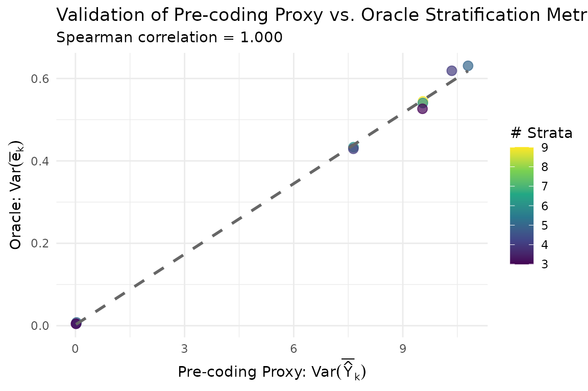
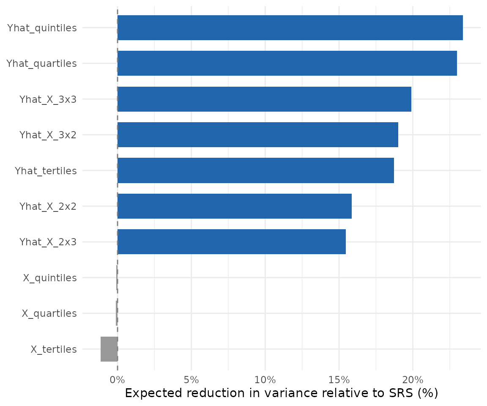
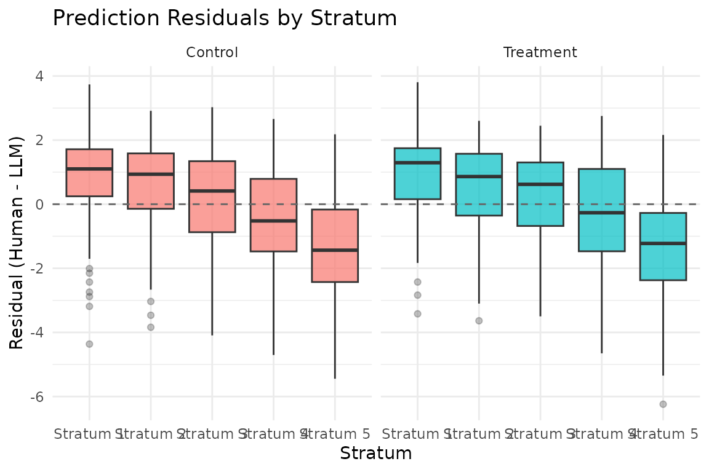

vignettes/applied_analysis.Rmd
applied_analysis.RmdThe main design choice in stratified sampling is how to define the strata. The goal is to group units so that surrogate errors are more similar within strata than across strata. Two diagnostics are useful:
This vignette walks through both approaches using simulated data where the ground truth is known, and then shows how to apply the pre-coding evaluation to real study design.
To illustrate all of this, we generate a population where the surrogate has moderate bias and heterogeneous residual variance. Since this is simulated data, we have access to the true outcomes for all units, which enables oracle evaluation:
set.seed( 101 )
dat <- generate_population(N = 2000, n_strat = 5, tau = 0.5,
bias = "moderate",
residual_var = "heterogeneous",
R2_target = 0.7,
strata_config = "balanced-approx")
# Make useless covariate for illustration
dat$X = rnorm( nrow( dat ) )
# Compute residuals (needed for oracle evaluation functions)
dat$resid <- dat$Yobs - dat$YhatThe create_stratification_candidates() function
generates a library of stratifications from all combinations of the
specified variables and a range of strata counts:
candidates <- create_stratification_candidates( dat,
vars = c("Yhat", "X"),
Z = "Z" )
names( candidates )
#> [1] "Yhat_tertiles" "Yhat_quartiles" "Yhat_quintiles" "X_tertiles"
#> [5] "X_quartiles" "X_quintiles" "Yhat_X_2x2" "Yhat_X_2x3"
#> [9] "Yhat_X_3x2" "Yhat_X_3x3"Each candidate is a factor vector that assigns every observation to a
stratum. Candidates are named by the variables and number of strata used
to construct them (e.g., Yhat_terciles,
Yhat_quintiles).
Before any human coding, you can rank candidates using the
compare_stratifications_precoding() function. This computes
proxy metrics based on the surrogate predictions alone:
pre_comparison <- compare_stratifications_precoding( dat,
candidates,
Z = "Z" )
pre_comparison
#> # A tibble: 10 × 9
#> stratification n_strata min_stratum_size max_stratum_size avg_size_ratio
#> <chr> <int> <int> <int> <dbl>
#> 1 Yhat_quintiles 5 200 200 1
#> 2 Yhat_quartiles 4 250 250 1
#> 3 Yhat_X_3x3 9 104 120 1.12
#> 4 Yhat_X_3x2 6 162 172 1.05
#> 5 Yhat_tertiles 3 333 334 1.00
#> 6 Yhat_X_2x3 6 159 174 1.07
#> 7 Yhat_X_2x2 4 243 257 1.06
#> 8 X_quintiles 5 200 200 1
#> 9 X_quartiles 4 250 250 1
#> 10 X_tertiles 3 333 334 1.00
#> # ℹ 4 more variables: mean_spread <dbl>, avg_within_var_Yhat <dbl>,
#> # sd_within_var_Yhat <dbl>, total_var_Yhat <dbl>The output includes the between-strata and within-strata variance of the surrogate, which serve as proxies for the corresponding quantities computed on the true residuals. A good stratification maximizes the between-strata variance (i.e., creates strata that are as different as possible in terms of surrogate predictions).
When full outcome data are available (as in a simulation or a
completed study), we can evaluate each candidate using the true
residuals. The compare_stratifications() function computes
oracle metrics. It requires a resid column (Yobs - Yhat) in
the data, and returns an overall table summarizing the strataficiations,
and a list of detailed information.
oracle_comparison <- compare_stratifications( dat,
candidates,
Z = "Z" )
oracle_comparison$summary
#> # A tibble: 10 × 11
#> stratification n_strata min_stratum_size max_stratum_size avg_size_ratio
#> <chr> <dbl> <int> <int> <dbl>
#> 1 Yhat_quintiles 5 200 200 1
#> 2 Yhat_quartiles 4 250 250 1
#> 3 Yhat_X_3x3 9 104 120 1.12
#> 4 Yhat_X_3x2 6 162 172 1.05
#> 5 Yhat_tertiles 3 333 334 1.00
#> 6 Yhat_X_2x3 6 159 174 1.07
#> 7 Yhat_X_2x2 4 243 257 1.06
#> 8 X_quintiles 5 200 200 1
#> 9 X_quartiles 4 250 250 1
#> 10 X_tertiles 3 333 334 1.00
#> # ℹ 6 more variables: mean_spread <dbl>, avg_within_var_resid <dbl>,
#> # sd_within_var_resid <dbl>, min_var_resid <dbl>, max_var_resid <dbl>,
#> # ratio_var_resid <dbl>compare_stratifications() shows the actual variance
reduction achieved by each stratification. We can compare the pre-coding
and oracle rankings to see how well the proxy metrics identify the best
stratification:
comparison <- compare_oracle_vs_precoding( oracle_comparison,
pre_comparison )
comparison
#> $combined_table
#> # A tibble: 10 × 11
#> stratification n_strata oracle_mean_spread oracle_avg_within_var
#> <chr> <dbl> <dbl> <dbl>
#> 1 Yhat_quintiles 5 0.631 2.04
#> 2 Yhat_quartiles 4 0.619 2.05
#> 3 Yhat_X_3x3 9 0.545 2.14
#> 4 Yhat_X_3x2 6 0.541 2.14
#> 5 Yhat_tertiles 3 0.526 2.14
#> 6 Yhat_X_2x3 6 0.433 2.24
#> 7 Yhat_X_2x2 4 0.429 2.24
#> 8 X_quintiles 5 0.00802 2.67
#> 9 X_quartiles 4 0.00499 2.67
#> 10 X_tertiles 3 0.00464 2.67
#> # ℹ 7 more variables: oracle_ratio_var <dbl>, oracle_rank <int>,
#> # precoding_mean_spread <dbl>, precoding_avg_within_var <dbl>,
#> # precoding_rank <int>, rank_diff <int>, abs_rank_diff <int>
#>
#> $rank_correlation
#> [1] 1
#>
#> $metric_correlation
#> [1] 1
#>
#> $scatter_plot
If the pre-coding and oracle rankings are similar, researchers can be confident that the pre-coding evaluation is a reliable guide for study design.
For a deeper understanding of why a particular stratification works
well, the compute_variance_decomposition() function
decomposes the total prediction error variance into between-strata and
within-strata components:
# Pick a specific stratification
dat$strata <- candidates[["Yhat_quintiles"]]
decomp <- compute_variance_decomposition( dat,
strata = dat$strata,
Z = "Z" )
decomp
#> $by_arm
#> # A tibble: 2 × 16
#> Z N_z mean_resid var_resid_total BS WS n_strata min_var max_var
#> <dbl> <int> <dbl> <dbl> <dbl> <dbl> <int> <dbl> <dbl>
#> 1 0 1000 -0.0206 2.66 0.651 2.02 5 1.39 2.86
#> 2 1 1000 -0.00246 2.67 0.610 2.07 5 1.30 2.65
#> # ℹ 7 more variables: var_ratio <dbl>, cv_var <dbl>, BS_plus_WS <dbl>,
#> # BS_minus_WS <dbl>, pct_BS <dbl>, pct_WS <dbl>, BS_over_WS <dbl>
#>
#> $overall
#> # A tibble: 1 × 12
#> N n_strata mean_resid var_resid BS WS BS_plus_WS BS_minus_WS pct_BS
#> <int> <int> <dbl> <dbl> <dbl> <dbl> <dbl> <dbl> <dbl>
#> 1 2000 5 -0.0115 5.33 1.26 4.09 5.35 -2.82 23.7
#> # ℹ 3 more variables: pct_WS <dbl>, BS_over_WS <dbl>, var_ratio <dbl>The decomposition quantifies how much of the residual variance is “explained” by the stratification (between-strata component) versus remaining within strata (within-strata component). A larger between-strata share means that the stratification is capturing meaningful heterogeneity in surrogate accuracy, which translates to greater efficiency gains from stratified sampling.
The package provides two visualization functions for comparing stratifications.
The compare_decomposition_oracle() function computes the
variance decomposition for all candidates. The
plot_decomposition_comparison() function then displays the
results side by side:
decomp_all <- compare_decomposition_oracle( dat,
candidates,
n_code = 200,
Z = "Z" )
plot_decomposition_comparison( decomp_all )
Stratifications with a larger green (between-strata) share are more effective at capturing heterogeneity.
The plot_strata_residuals() function shows the
distribution of residuals within each stratum for a given
stratification:
plot_strata_residuals( dat, strata = dat$strata )
A well-chosen stratification produces strata with clearly different mean residuals (the bias pattern) and/or different residual spreads (the variance pattern).
Once a stratification is chosen, you can compute the Neyman (optimal)
allocation, which allocates more coded observations to strata with
higher residual variance. The
calc_optimal_allocation_oracle() function computes this
allocation:
opt_alloc <- calc_optimal_allocation_oracle( dat, n_code = 200,
Z = "Z",
strata = "strata",
return_counts = TRUE )
opt_alloc
#> # A tibble: 10 × 10
#> .Z .strata N.zk n_pilot.zk var.resid var.alloc weight prop n.zk
#> <dbl> <fct> <int> <dbl> <dbl> <dbl> <dbl> <dbl> <dbl>
#> 1 0 Very Low Yhat 200 0 1.46 1.46 241. 0.171 17
#> 2 0 Low Yhat 200 0 1.39 1.39 236. 0.167 17
#> 3 0 Med Yhat 200 0 2.05 2.05 286. 0.203 20
#> 4 0 High Yhat 200 0 2.34 2.34 306. 0.218 22
#> 5 0 Very High Yhat 200 0 2.86 2.86 338. 0.240 24
#> 6 1 Very Low Yhat 200 0 1.30 1.30 228. 0.160 16
#> 7 1 Low Yhat 200 0 1.78 1.78 267. 0.187 19
#> 8 1 Med Yhat 200 0 2.10 2.10 290. 0.203 20
#> 9 1 High Yhat 200 0 2.50 2.50 316. 0.222 22
#> 10 1 Very High Yhat 200 0 2.65 2.65 326. 0.228 23
#> # ℹ 1 more variable: n_new.zk <dbl>Compare with proportional allocation (where each stratum is sampled at the same rate):
# Proportional allocation counts
prop_alloc <- dat %>%
group_by(Z, strata) %>%
summarise(N_k = n(), .groups = "drop") %>%
group_by(Z) %>%
mutate(n_k_prop = round(100 * N_k / sum(N_k))) %>%
ungroup()
# Side-by-side comparison
left_join(
opt_alloc %>% select(.Z, .strata, N.zk, n.zk),
prop_alloc %>% select(Z, strata, n_k_prop),
by = c(".Z" = "Z", ".strata" = "strata")
) %>%
rename(n_optimal = n.zk, n_proportional = n_k_prop)
#> # A tibble: 10 × 5
#> .Z .strata N.zk n_optimal n_proportional
#> <dbl> <fct> <int> <dbl> <dbl>
#> 1 0 Very Low Yhat 200 17 20
#> 2 0 Low Yhat 200 17 20
#> 3 0 Med Yhat 200 20 20
#> 4 0 High Yhat 200 22 20
#> 5 0 Very High Yhat 200 24 20
#> 6 1 Very Low Yhat 200 16 20
#> 7 1 Low Yhat 200 19 20
#> 8 1 Med Yhat 200 20 20
#> 9 1 High Yhat 200 22 20
#> 10 1 Very High Yhat 200 23 20Under heterogeneous residual variance, optimal allocation can reduce the variance of the stratified estimator. However, in practice, the within-stratum residual variances must be estimated from pilot data or prior knowledge.
Based on the evaluation framework, we offer some practical guidelines for selecting a stratification:
Start with the surrogate as the primary stratification
variable. The surrogate prediction (Yhat)
typically captures the most relevant variation for reducing estimator
variance.
Consider interaction stratifications when you
have domain knowledge suggesting that specific covariates moderate
surrogate accuracy. The make_interaction_strata() function
makes it easy to construct these.
Prefer moderate numbers of strata (3 to 10). Too few strata fail to capture heterogeneity; too many strata create small cells that increase sampling variability.
Use proportional allocation as the default. Unless you have strong prior information about within-stratum variance heterogeneity, proportional allocation is robust and does not require auxiliary information.
Validate with oracle metrics when possible. If pilot data with coded outcomes are available, use the oracle evaluation functions to confirm that the pre-coding selection is reasonable.
For the theoretical background and formal results underlying these methods, see Mozer, Pashley, and Miratrix (2026).